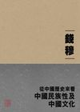
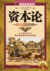
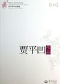
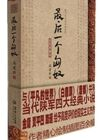

文学社社
主编推荐
★力荐

芮成钢：《虚实之间》
有十年记者生涯对东西方文化的洞悉，又有与奥巴马等政要零距离接触...
- 兄弟我在义乌的发财史
- 读佛即是拜佛：唐僧传
- 二战苏联陆军单兵装备
流行小说
社科历史
文学艺术

省长的女婿
￥ 5.98
辛夷坞：致青春
￥ 5.00

越位
￥ 2.99

扫黑
￥ 6.40

我的帝王生涯
￥ 4.00

南水北调书记
￥ 5.98

1／14第一季
￥ 4.00

辛夷坞：原来
￥ 4.50

奋斗的仕途
￥ 3.00

历史选择邓小平
￥ 6.00

铁凝看中国文化
￥ 8.00

刺杀林肯
￥ 3.00

资本论
￥ 3.00

为什么是朱元璋
￥ 4.00
阎崇年：大故宫
￥ 5.00

皇后隐历史
￥ 4.00

武昌城
￥ 4.50

贾平凹作品选
￥ 3.00

最后一个匈奴
￥ 4.00

岁月与性情
￥ 8.00

浮生六记
￥ 3.00

周国平：宝贝
￥ 8.00
岳飞传
￥ 3.00

撒哈拉的眼泪
￥ 5.96
流行小说订阅榜
- 1山西煤老板（全文）
- 2你不可不知的人性（全二
- 3到爱的距离
- 4梅雨的季节（全文）
- 5大清相国（全文）
- 6借势（全文）
- 7省委班子2（全文）
- 8静水流深（全文）
- 9生死疲劳（全文）
- 10金瓶梅（全文）
社科历史订阅榜
- 1博弈与社会（全文）
- 2激荡三十年:中国企业
- 3我承认我不曾历经沧桑
- 4吴敬琏传（全文）
- 5世界因你不同：李开复自传
- 6我们台湾这些年（全文）
- 7课本上不说的历史
- 8重口味心理学（揭开日常行
- 9微表情心理学（最流行、最
- 10法网冠军李娜自传：独自上
文学艺术订阅榜
- 12012诺贝尔文学奖得主莫言
- 2变：2012年诺贝尔文学奖得
- 3逃离：2013诺贝尔文学奖得
- 4青春（韩寒2011最新作品）
- 5教你幽默到心田
- 6宝贝，宝贝
- 7白魔窟——白粉仔的十二年
- 8中国式关系（全文）
- 9于丹：重温最美古诗词（17
- 10妞妞：一个父亲的札记